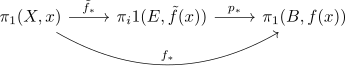

lifting theorem for a covering
Proposition
Let $E,B,X$ be topological spaces, $p: E \rightarrow B$ a covering map and $f: X \rightarrow B$ a continuous map , such that $X$ is locally and globally pathconnected
TFAE:
- there exists a continuous map $\tilde{f}: X \rightarrow E$ with $p \circ \tilde{f} = f$
- for some basepoint $x \in X$ we have for some $e \in \mathrm{Fib}_{b}^p$
Proof
1) $\implies$ 2)
Spupose $\tilde{f}$ existest, then by applying the homotopy group functor, we get

Hence
2) $\implies$ 1)
Given some $e \in \mathrm{Fib}_{f(x)}$ such that
define $\tilde{f}$ as follows: for $x \in X$ pick some path $\gamma: x \leadsto x'$ in $X$.
We defnie
where $\overline{\gamma_e}$ is the uniquely lifted path of $f(\gamma)$ ot $E$ with $\overline{\gamma_e}(0) = e$ (cf. unique path lifting for a covering map)
welldefined set theoretic map
if $\gamma'$ is another path form $x$ to $x'$ Then the concatenation $\gamma'^{-1} * \gamma$ is a loop at $x$.
Thus
where $p_{*}(\pi_p(E,e))$ are the loops in $B$ that lift to loops in $E$
since
we conclude, that
Thus $\tilde{f}(x)$ is independent of choice of $\gamma$.
also by contsruction,
continuous
Let $U \subseteq E$ be open.. w.l.o.g. assume that $U$ is such that
is a homeomorphism (cf.preimage and union, using local triviality of $p$)
therefore
where $f^{-1}[V]$ is open, since $f$ is continuous.
Pick $x \in \tilde{f}^{-1}[U]$ and an open and pathconnected set $V' \subseteq f^{-1}[V]$ containing $x'$, which can be done, since $X$ is locally path connected.
For $y \in V'$ we may calculate $\tilde{f}(y)$ by chosing a path $\gamma$ from $x$ to $x'$, concatenade with the path $\gamma'$ from $x'$ to $y$ inside $V$.
hence
since $f(V)') \subseteq V$, a lift is given by
and hence